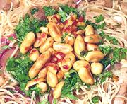

|
Whole Peanut GarnishSoutheast Asia | ||||
| Makes: Effort: Sched: DoAhead: |
1/2 c ** 15 min Yes |
Roasted peanuts, whole or crushed, are a much used garnish throughout Southeast Asia, plain or with added ingredients. This garnish is easy to make and looks good. The photo shows it on a noodle dish with a bed of chopped cilantro laid down first. | |||
|
|
1/2 1 3 1/4 1 |
c cl c T |
Dry Roasted Peanuts (1) Chili, fresh (2) Garlic Cilantro Oil |
|